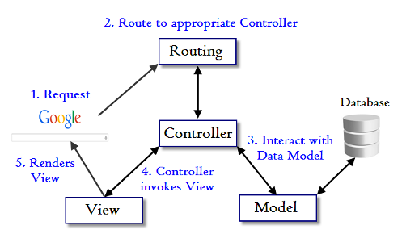

Controller and Parameters 2017

Most likely, we want to access data sent in by the user or other parameters in our controller actions.
There are two kinds of parameters possible in a web application:
- The first are parameters that are sent as part of the URL, called query string parameters. The query string is everything after "?" in the URL.
- The second type of parameter is usually referred to as POST data. This information usually comes from an HTML form which has been filled in by the user. It's called POST data because it can only be sent as part of an HTTP POST request.
Rails does not make any distinction between query string parameters and POST parameters, and both are available in the params hash in our controller:
class UsersController < ApplicationController
# This action uses query string parameters because it gets run
# by an HTTP GET request, but this does not make any difference
# to the way in which the parameters are accessed. The URL for
# this action would look like this in order to list activated
# users: /users?status=activated
def index
if params[:status] == "activated"
@users = User.activated
else
@users = User.inactivated
end
end
# This action uses POST parameters. They are most likely coming
# from an HTML form which the user has submitted. The URL for
# this RESTful request will be "/users", and the data will be
# sent as part of the request body.
def create
@user = User.new(params[:user])
if @user.save
redirect_to @user
else
# This line overrides the default rendering behavior, which
# would have been to render the "create" view.
render "new"
end
end
end
The params hash is not limited to one-dimensional keys and values. It can contain arrays and (nested) hashes. To send an array of values, append an empty pair of square brackets "[]" to the key name:
GET /users?ids[]=1&ids;[]=2&ids;[]=3
The value of params[:ids] will now be ["1", "2", "3"]. Note that parameter values are always strings; Rails makes no attempt to guess or cast the type.
To send a hash you include the key name inside the brackets:
<form accept-charset="UTF-8" action="/users" method="post"> <input type="text" name="user[name]" value="Auction" /> <input type="text" name="user[phone]" value="201-867-5309" /> <input type="text" name="user[address][postcode]" value="07001" /> <input type="text" name="user[address][city]" value="New Jersey" /> </form>
When this form is submitted, the value of params[:user] will be { "name" => "Auction", "phone" => "201-867-5309", "address" => { "postcode" => "07001", "city" => "New Jersey" } }.
$ rails g controller users
If we're writing a web service application, we might be more comfortable accepting parameters in JSON format. If the "Content-Type" header of our request is set to "application/json", Rails will automatically convert our parameters into the params hash, which we can access as we would normally.
So for example, if we're sending this JSON content:
{ "company": { "name": "Auction", "address": "780 New Jersey" } }
We'll get:
params[:company] as { "name" => "Auction", "address" => "780 New Jersey" }
Also, if we've turned on config.wrap_parameters in our initializer or calling wrap_parameters in our controller, we can safely omit the root element in the JSON parameter. The parameters will be cloned and wrapped in the key according to our controller's name by default.
So the above parameter can be written as:
{ "name": "Auction", "address": "780 New Jersey" }
And assume that we're sending the data to CompaniesController, it would then be wrapped in :company key like this:
{ name: "Auction", address: "780 New Jersey", company: { name: "Auction", address: "780 New Jersey" } }
The params hash will always contain the :controller and :action keys. But we should use the methods controller_name and action_name instead to access these values.
Any other parameters defined by the routing, such as :id will also be available.
As an example, consider a listing of users where the list can show either active or inactive users. We can add a route which captures the :status parameter in a "pretty" URL:
get '/users/:status' => 'users#index', foo: 'bar'
In this case, when a user opens the URL /users/active, params[:status] will be set to "active". When this route is used, params[:foo] will also be set to "bar" just like it was passed in the query string. In the same way params[:action] will contain "index".
Sometime we get "ActiveModel::ForbiddenAttributesError" error.
It's one of the Rails security features.
The one we got is called strong parameters, which requires us to tell Rails exactly which parameters are allowed into our controller actions. This is to protect us from "mass assignment" though the ability to grab and automatically assign all controller parameters to our model in one shot makes our job easier.
Here is the same code from Getting Started with Rails that triggers the error:
class ArticlesController < ApplicationController def new end def create @article = Article.new(params[:article]) @article.save redirect_to @article end end
We have to whitelist our controller parameters to prevent wrongful mass assignment.
In this case, we want to both allow and require the title and text parameters for valid use of create. The syntax for this introduces require and permit.
The change will involve one line in the create action:
class ArticlesController < ApplicationController def new end def create @article = Article.new(params.require(:article).permit(:title, :text)) @article.save redirect_to @article end end
This is often factored out into its own method so it can be reused by multiple actions in the same controller, for example create and update.
We often put a method into private section so that we want to make sure it can't be called outside its intended context. Here is how we do it:
class ArticlesController < ApplicationController
def new
end
def create
@article = Article.new(article_params)
@article.save
redirect_to @article
end
private
def article_params
params.require(:article).permit(:title, :text)
end
end
Bogotobogo's contents
To see more items, click left or right arrow.


Bogotobogo Image / Video Processing
Computer Vision & Machine Learning
with OpenCV, MATLAB, FFmpeg, and scikit-learn.

 object (Image Container)")
, ones(), eye() and clone()")


 - Fast Marching Methods")


 algorithm")


")


")

 by thresholding color")


 radial basis function kernel (RBF kernel)")
")
Bogotobogo's Video Streaming Technology
with FFmpeg, HLS, MPEG-DASH, H.265 (HEVC)


")


")

 - Optimization")


Ph.D. / Golden Gate Ave, San Francisco / Seoul National Univ / Carnegie Mellon / UC Berkeley / DevOps / Deep Learning / Visualization